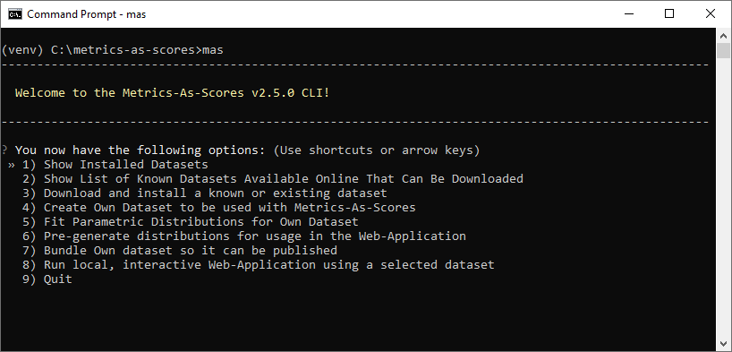
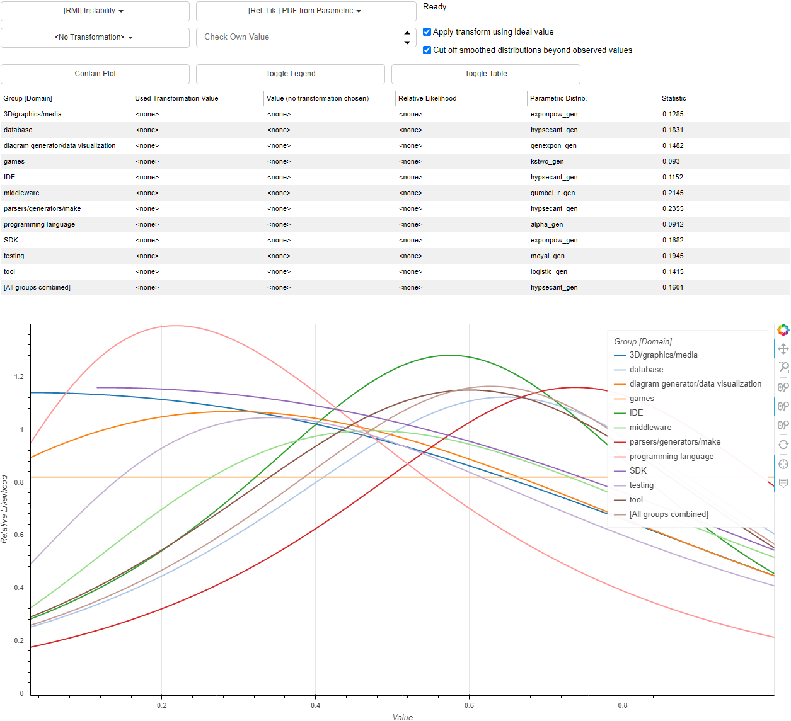

Metrics As Scores


Please Note: Metrics As Scores (MAS) changed considerably
between versions
v1.0.8
and v2.x.x.
The current version is v2.8.1.
From version v2.x.x it has the following new features:
Proper documentation and testing
New version on PyPI. Install the package and run the command line interface by typing
mas!
Contains the data and scripts needed for the application
Metrics as Scores, check out
https://mas.research.hönel.net/.
This package accompanies the paper entitled “Contextual Operationalization of Metrics As Scores: Is My Metric Value Good?” (Hönel et al. 2022). It seeks to answer the question whether or not the domain a software metric was captured in, matters. It enables the user to compare domains and to understand their differences. In order to answer the question of whether a metric value is actually good, we need to transform it into a score. Scores are normalized and rectified distances, that can be compared in an apples-to-apples manner, across domains. The same metric value might be good in one domain, while it is not in another. To borrow an example from the domain of software: It is much more acceptable (or common) to have large applications (in terms of lines of code) in the domains of games and databases than it is for the domains of IDEs and SDKs. Given an ideal value for a metric (which may also be user-defined), we can transform observed metric values to distances from that value and then use the cumulative distribution function to map distances to scores.
Usage
You may install Metrics As Scores directly from PyPI. For users that wish to contribute to Metrics As Scores, a development setup is recommended. In either case, after the installation, you have access to the text-based user interface.
# Installation from PyPI:
pip install metrics-as-scores
You can bring up the TUI simply by typing the following after installing or cloning the repo (see next section for more details):
mas
Text-based User Interface (TUI)
Metrics As Scores features a text-based command line user interface (TUI). It offers a couple of workflows/wizards, that help you to work and interact with the application. There is no need to modify any source code, if you want to do one of the following:
Show Installed Datasets
Show List of Known Datasets Available Online That Can Be Downloaded
Download and install a known or existing dataset
Create Own Dataset to be used with Metrics-As-Scores
Fit Parametric Distributions for Own Dataset
Pre-generate distributions for usage in the Web-Application
Bundle Own dataset so it can be published
Run local, interactive Web-Application using a selected dataset

Web Application
Metrics As Scores’ main feature is perhaps the Web Application. It can be run directly and locally from the TUI using a selected dataset (you may download a known dataset or use your own). The Web Application allows to visually inspect each feature across all the defined groups. It features the PDF/PMF, CDF and CCDF, as well as the PPF for each feature in each group. It offers five different principal types of densities: Parametric, Parametric (discrete), Empirical, Empirical (discrete), and (approximate) Kernel Density Estimation. The Web Application includes a detailed Help section that should answer most of your questions.

Development Setup
This project was developed using and requires Python >=3.10. The
development documentation can be found at
https://mrshoenel.github.io/metrics-as-scores/. Steps:
Clone the Repository,
Set up a virtual environment,
Install packages.
Setting Up a Virtual Environment
It is recommended to use a virtual environment. To use a virtual environment, follow these steps (Windows specific; activation of the environment might differ).
virtualenv --python=C:/Python310/python.exe venv # Use specific Python version for virtual environment
venv/Scripts/activate
Here is a Linux example that assumes you have Python 3.10 installed
(this may also require installing python3.10-venv and/or
python3.10-dev):
python3.10 -m venv venv
source venv/bin/activate # Linux
Installing Packages
The project is managed with Poetry. To install the required packages,
simply run the following.
venv/Scripts/activate
# First, update pip:
(venv) C:\metrics-as-scores>python -m pip install --upgrade pip
# First install Poetry v1.3.2 using pip:
(venv) C:\metrics-as-scores>pip install poetry==1.3.2
# Install the projects and its dependencies
(venv) C:\metrics-as-scores> poetry install
The same in Linux:
source venv/bin/activate # Linux
(venv) ubuntu@vm:/tmp/metrics-as-scores$ python -m pip install --upgrade pip
(venv) ubuntu@vm:/tmp/metrics-as-scores$ pip install poetry==1.3.2
(venv) ubuntu@vm:/tmp/metrics-as-scores$ poetry install
Running Tests
Tests are run using poethepoet:
# Runs the tests and prints coverage
(venv) C:\metrics-as-scores>poe test
You can also generate coverage reports:
# Writes reports to the local directory htmlcov
(venv) C:\metrics-as-scores>poe cov
Example Usage
Metrics As Scores can be thought of an interactive, multiple-ANOVA
analysis and explorer. The analysis of variance (ANOVA; Chambers,
Freeny, and Heiberger (2017)) is usually used to analyze the differences
among hypothesized group means for a single feature. An ANOVA might
be used to estimate the goodness-of-fit of a statistical model. Beyond
ANOVA, MAS seeks to answer the question of whether a sample of a
certain quantity (feature) is more or less common across groups. For
each group, we can determine what might constitute a common/ideal value,
and how distant the sample is from that value. This is expressed in
terms of a percentile (a standardized scale of [0,1]), which we call
score.
Concrete Example Using the Qualitas.class Corpus Dataset
The notebook
notebooks/Example-webapp-qcc.ipynb
holds a concrete example for using the web application to interactively
obtain scores. In this example, we create a hypothetical application
that ought to be in the application domain SDK. Using a concrete
metric, Number of Packages, we find out that our hypothetical new SDK
application scores poorly for what it is intended to be.
This example illustrates the point that software metrics, when captured
out of context, are meaningless (Gil and Lalouche 2016). For example,
typical values for complexity metrics are vastly different, depending on
the type of application. We find that, for example, applications of type
SDK have a much lower expected complexity compared to Games (1.9
vs. 3.1) (Hönel et al. 2022). Software metrics are often used in
software quality models. However, without knowledge of the application’s
context (here: domain), the deduced quality of these models is at least
misleading, if not completely off. This becomes apparent if we examine
how an application’s complexity scores across certain domains.
Since there are many software metrics that are captured simultaneously, we can also compare domains in their entirety: How many metrics are statistically significantly different from each other? Is there a set of domains that are not distinguishable from each other? Are there metrics that are always different across domains and must be used with care? In this example, we use a known and downloadable dataset (Hönel 2023b). It is based on software metrics and application domains of the “Qualitas.class corpus” (Terra et al. 2013; Tempero et al. 2010).
Concrete Example Using the Iris Dataset
The notebook
notebooks/Example-create-own-dataset.ipynb
holds a concrete example for creating/importing/using one’s own dataset.
Although all necessary steps can be achieved using the TUI, this
notebook demonstrates a complete example of implementing this in code.
Diamonds Example
The diamonds dataset (Wickham 2016) holds prices of over 50,000 round cut diamonds. It contains a number attributes for each diamond, such as its price, length, depth, or weight. The dataset, however, features three quality attributes: The quality of the cut, the clarity, and the color. Suppose we are interested in examining properties of diamonds of the highest quality only, across colors. Therefore, we select only those diamonds from the dataset that have an ideal cut and the best (IF) clarity. Now only the color quality gives a context to each diamonds and its attributes (i.e., diamonds are now grouped by color).
This constellation now allows us to examine differences across differently colored diamonds. For example, there are considerable differences in price. We find that only the group of diamonds of the best color is significantly different from the other groups. This example is available as a downloadable dataset (Hönel 2023c).
Datasets
Metrics As Scores can use existing and own datasets. Please keep reading to learn how.
Use Your Own
Metrics As Scores has a built-in wizard that lets you import your own dataset! There is another wizard that bundles your dataset so that it can be shared with others. You may contribute your dataset so we can add it to the curated list of known datasets (see next section). If you do not have an own dataset, you can use the built-in wizard to download any of the known datasets, too!
Note that Metrics As Scores supports you with all tools necessary to create a publishable dataset. For example, it carries out the common statistical tests:
ANOVA (Chambers, Freeny, and Heiberger 2017): Analysis of variance of your data across the available groups.
Tukey’s Honest Significance Test (TukeyHSD; Tukey (1949)): This test is used to gain insights into the results of an ANOVA test. While the former only allows obtaining the amount of corroboration for the null hypothesis, TukeyHSD performs all pairwise comparisons (for all possible combinations of any two groups).
Two-sample T-test: Compares the means of two samples to give an indication whether or not they appear to come from the same distribution. Again, this is useful for comparing groups. Tukey’s test is used to gain insights into the results of an ANOVA test. While the former only allows obtaining the amount of corroboration for the null hypothesis, TukeyHSD performs all pairwise comparisons (for all possible combinations of any two groups).
It also creates an automatic report based on these tests that you can simply render into a PDF using Quarto.
A publishable dataset must contain parametric fits and pre-generated
densities (please check the wizard for these two). Metrics As Scores can
fit approximately 120 continuous and discrete random variables using
Pymoo (Blank and Deb 2020). Note that Metrics As Scores also
automatically carries out a number of goodness-of-fit tests. The type of
test also depends on the data (for example, not each test is valid for
discrete data, such as the KS two-sample test). These tests are then
used to select some best fitting random variable for display in the web
application.
Cramér-von Mises- (Cramér 1928) and Kolmogorov–Smirnov one-sample (Stephens 1974) tests: After fitting a distribution, the sample is tested against the fitted parametric distribution. Since the fitted distribution cannot usually accommodate all of the sample’s subtleties, the test will indicate whether the fit is acceptable or not.
Cramér-von Mises- (Anderson 1962), Kolmogorov–Smirnov-, and Epps–Singleton (Epps and Singleton 1986) two-sample tests: After fitting, we create a second sample by uniformly sampling from the
PPF. Then, both samples can be used in these tests. The Epps–Singleton test is also applicable for discrete distributions.
Known Datasets
The following is a curated list of known, publicly available datasets that can be used with Metrics As Scores. These datasets can be downloaded using the text-based user interface.
Metrics and Domains From the Qualitas.class Corpus (Hönel 2023b). 10 GB. https://doi.org/10.5281/zenodo.7633949.
Elisa Spectrophotometer Positive Samples (Hönel 2023a). 266 MB. https://doi.org/10.5281/zenodo.7633989.
Price, Weight, and Other Properties of Over 1,200 Ideal-Cut and Best-Clarity Diamonds (Hönel 2023c). 508 MB. https://doi.org/10.5281/zenodo.7647596.
The Iris Flower Data Set (Hönel 2023d). 143 MB. https://doi.org/10.5281/zenodo.7669645.
Personalizing the Web Application
The web application “Metrics As Scores” is located in the
directory
src/metrics_as_scores/webapp/.
The app itself has three vertical blocks: a header, the interactive
part, and a footer. Header and footer can be easily edited by modifing
the files
src/metrics_as_scores/webapp/header.html
and
src/metrics_as_scores/webapp/footer.html.
Note that when you create your own dataset, you get to add sections to the header and footer using two HTML fragments. This is recommended over modifying the web application directly.
If you want to change the title of the application, you will have to
modify the file
src/metrics_as_scores/webapp/main.py
at the very end:
# Change this line to your desired title.
curdoc().title = "Metrics As Scores"
Important: If you modify the web application, you must always maintain two links: one to https://mas.research.hönel.net/ and one to this repository, that is, https://github.com/MrShoenel/metrics-as-scores.
References
Anderson, T. W. 1962. “On the Distribution of the Two-Sample Cramer-von Mises Criterion.” The Annals of Mathematical Statistics 33 (3): 1148–59. https://doi.org/10.1214/aoms/1177704477.
Blank, Julian, and Kalyanmoy Deb. 2020. “pymoo: Multi-Objective Optimization in Python.” IEEE Access 8: 89497–509. https://doi.org/10.1109/ACCESS.2020.2990567.
Chambers, John M., Anne E. Freeny, and Richard M. Heiberger. 2017. “Analysis of Variance; Designed Experiments.” In Statistical Models in S, edited by John M. Chambers and Trevor J. Hastie, 1st ed. Routledge. https://doi.org/10.1201/9780203738535.
Cramér, Harald. 1928. “On the Composition of Elementary Errors.” Scandinavian Actuarial Journal 1928 (1): 13–74. https://doi.org/10.1080/03461238.1928.10416862.
Epps, T. W., and Kenneth J. Singleton. 1986. “An Omnibus Test for the Two-Sample Problem Using the Empirical Characteristic Function.” Journal of Statistical Computation and Simulation 26 (3-4): 177–203. https://doi.org/10.1080/00949658608810963.
Gil, Joseph Yossi, and Gal Lalouche. 2016. “When Do Software Complexity Metrics Mean Nothing? - When Examined Out of Context.” J. Object Technol. 15 (1): 2:1–25. https://doi.org/10.5381/jot.2016.15.5.a2.
Hönel, Sebastian. 2023a. “Metrics As Scores Dataset: Elisa Spectrophotometer Positive Samples.” Zenodo. https://doi.org/10.5281/zenodo.7633989.
———. 2023b. “Metrics As Scores Dataset: Metrics and Domains From the Qualitas.class Corpus.” Zenodo. https://doi.org/10.5281/zenodo.7633949.
———. 2023c. “Metrics As Scores Dataset: Price, Weight, and Other Properties of Over 1,200 Ideal-Cut and Best-Clarity Diamonds.” Zenodo. https://doi.org/10.5281/zenodo.7647596.
———. 2023d. “Metrics As Scores Dataset: The Iris Flower Data Set.” Zenodo. https://doi.org/10.5281/zenodo.7669664.
Hönel, Sebastian, Morgan Ericsson, Welf Löwe, and Anna Wingkvist. 2022. “Contextual Operationalization of Metrics As Scores: Is My Metric Value Good?” In 22nd IEEE International Conference on Software Quality, Reliability and Security, QRS 2022, Guangzhou, China, December 5–9, 2022, 333–43. IEEE. https://doi.org/10.1109/QRS57517.2022.00042.
Stephens, M. A. 1974. “EDF Statistics for Goodness of Fit and Some Comparisons.” Journal of the American Statistical Association 69 (347): 730–37. https://doi.org/10.1080/01621459.1974.10480196.
Tempero, Ewan D., Craig Anslow, Jens Dietrich, Ted Han, Jing Li, Markus Lumpe, Hayden Melton, and James Noble. 2010. “The Qualitas Corpus: A Curated Collection of Java Code for Empirical Studies.” In 17th Asia Pacific Software Engineering Conference, APSEC 2010, Sydney, Australia, November 30 - December 3, 2010, edited by Jun Han and Tran Dan Thu, 336–45. IEEE Computer Society. https://doi.org/10.1109/APSEC.2010.46.
Terra, Ricardo, Luis Fernando Miranda, Marco Tulio Valente, and Roberto da Silva Bigonha. 2013. “Qualitas.class corpus: a compiled version of the qualitas corpus.” ACM SIGSOFT Software Engineering Notes 38 (5): 1–4. https://doi.org/10.1145/2507288.2507314.
Tukey, John W. 1949. “Comparing Individual Means in the Analysis of Variance.” Biometrics 5 (2): 99–114. https://doi.org/10.2307/3001913.
Wickham, Hadley. 2016. ggplot2: Elegant Graphics for Data Analysis. Springer-Verlag New York. https://ggplot2.tidyverse.org.